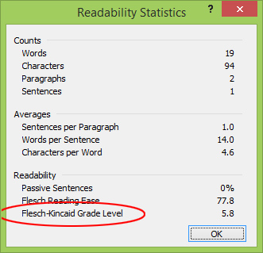

Writing in plain language doesn't mean over-simplifying or leaving out critical information. Using plain language actually makes critical information accessible and readable for everyone.
By writing plainly and simply, you:
increase the chances that people will find, read and understand your information from any device
make your information more accessible to people with disabilities
allow people who are reading your information on a small screen to see essential information first
save resources when editing and translating your text
improve task completion and cuts costs by, for example, reducing enquiries
2.1 Start with the most important information
Start your content with the most important information, and be direct. When people scan web pages, they tend to start in the top left hand corner and scan to the right and down. As they move down the page, they scan less and less to the right.
Organize your content using an inverted pyramid structure to:
guide your audience to the information they need to complete their task
place supporting and relevant details toward the end of the text
Figure 1: inverted pyramid structure
The inverted pyramid structure is divided into four sections, from top to bottom. It shows the order of information on a web page.
First:
start with the most important idea, step or information
Second:
add details and tasks in order of importance
keep all task related content in the centre of the page
use links to direct people to key information and tasks
Third:
include information for audiences who want to learn more or have more knowledge of the topic or service, but only if it makes sense
Fourth:
add links only if they relate to content that supports completion of the task on the web page (for example, laws or publications)
Get to the point
Omit background information and messages that welcome people to your program or site. These kinds of messages get in people's way when they're trying to accomplish a task.
Write direct statements.
Example of direct statements
Write: Present your passport to the border officer. Instead of: According to Canadian legislation, you're required to present your passport to the agent who will welcome you into the country.
Replace long words with short, simple and everyday words that most people understand and use. Simple words have 2 syllables or less. They're easier to scan than long, complex words.
In an active sentence, the subject does the action. The sentence is clear and direct.
In a passive sentence, it may not be clear who or what is doing the action.
Example of passive and active sentences
Active: We may ask you to provide proof of citizenship. Passive: You may be asked to provide proof of citizenship.
Positive or negative form
Whenever possible, tell people what they may or must do instead of what they may not or must not do. Avoid negatives, double negatives and exceptions to exceptions.
Examples of positive and negative sentences
Positive: You're entitled to part of the deduction. Negative: You're not entitled to the entire deduction.
Positive: The procedure will be effective. Doublenegative: The procedure will not be ineffective.
Positive: You may claim a child born in 1972 or earlier as a dependent, if he or she has a mental or physical disability. Double negative: You may not claim anything for a dependent child born in 1972 or earlier, unless the child has a mental or physical disability.
If something has serious consequences, you can use the negative form to explain that something isn't possible or should not be done.
Examples of using the negative form for something that has serious consequences
Write: Do not try to locate the source of carbon monoxide. Leave your home immediately and move to fresh air.
Where possible, avoid using jargon, idioms and expressions. Use the clearest, most popular term for your audience.
Legal and technical terms and "government-speak" confuse most people.
People who don't speak English or French might use online tools to translate text. These tools don't always translate idioms and expressions accurately.
Examples of jargon, idioms and expressions
Jargon: bench warrant (an order by a judge to arrest someone who didn't show up in court or comply with certain conditions)
Idiom: to hire a helping hand (meaning to hire an employee)
Expression: attack your least favourite task first (meaning do your least favourite task first)
If you must include jargon familiar to your target audience, be sure to:
explain it using simple, familiar words or give an example to help non-specialists understand
never use jargon to explain jargon
Examples of statements that avoid the use of jargon
Write: You have to file your income tax return (T1) by April 30. Instead of: You have to file your T1 return by April 30.
Write: Learn about savings plans that can help you save enough money to retire. Instead of: Learn about different types of savings plans that will let you build up your retirement nest egg.
Refer to your analytics to find out which search terms your audience uses to find related content.
2.6 Use simple sentences
Keep sentence structure simple by putting the subject and the verb at the beginning of the sentence and by using the subject + verb + object construction. This structure helps the reader understand what the subject of the sentence is doing by placing the subject first, followed by the verb.
Avoid complex and compound sentences. They generally contain too much information for people to understand when they're scanning.
Examples of simple sentences
Write: Learn about Canada's transportation system. Find information about using paved roads, bike trails, airports and ports across the country. Instead of: Canada's vast transportation system enables millions of people each year to travel throughout the country, around the world, and to work and back. From this page you can access a wealth of transportation information related to travelling and commuting.
Replace complex sentence structures with direct statements.
Examples of direct statements
Write: You have until April 30 to file your tax return. Instead of: The period of time that you have to file your tax return ends on April 30.
Replace noun strings (a series of 2 or more nouns used to name something) with direct statements.
Examples of statements that avoid chains of nouns
Write: The evaluation team will submit its final report on the training program in September. Instead of: The training program evaluation team will submit its final report in September.
Surround a long sentence with shorter ones because it helps people understand the long sentence.
Be concise. Use as few words as possible to express an idea. By being concise, you'll help everyone, even specialists, complete the task they set out to do.
Keep sentences and paragraphs short to make them easier to scan on any screen size. People who have learning disabilities may find it difficult to scan and understand long sentences and paragraphs.
Try to keep sentences under 20 words. You can do this by:
breaking long sentences into shorter ones
limiting each sentence to 1 idea
removing unnecessary words
Examples of shortened sentences
Write: We received your request for funding and approved it. Instead of: We received your request for funding, which we've thoroughly reviewed and approved in a timely manner.
Write: We'll consider any type of investment. Instead of: Any type of investment will be taken into consideration.
Try to keep paragraphs to 3 sentences. You can do this by:
developing 1 main idea per paragraph
presenting a series of more than 2 ideas or words as a vertical list
using a short form for a long title instead of repeating it
When explaining a requirement that comes from an act or regulation, avoid mentioning the act or regulation by name. Include only the information people need to complete the task.
If you must include the name of the act or regulation, always give a plain-language description. First, explain what your audience needs to know and why they need to know more about the act or regulation. Then, you may add the reference to the act or regulation.
Examples of references to legislation
Write: You can apply for your child to become a Canadian citizen after they arrive in Canada as a permanent resident.
Instead of: After your child arrives in Canada as a permanent resident, you can apply for citizenship on the child's behalf under section 5.1 of the Citizenship Act.
Check the reading level of your text. Make sure that it meets the reading level you're targeting based on the literacy needs of your audience. Do this every so often while you're writing content. You can use various tools to do this.
Readability tools help you check if content is too wordy or complex. Writing content at a reading level above grade 8 can make it difficult for many people to understand or complete their task.
Use a readability tool
You can use a readability tool like Flesch-Kincaid to check the reading level of your English content. This tool is available as part of Microsoft Word. It generally reflects the years of education needed to understand the text.
To use Flesch-Kincaid:
in Word 2010 and later, click the File tab, and then click Options
click Proofing
under When correcting spelling and grammar in Word, make sure the Check grammar with spelling check box is selected
select Show readability statistics
You can check the reading level of a whole page or just part of a page. To check the reading level:
accept any tracked changes
place periods at the end of any bulleted items and headings (remove the periods before publishing)
highlight the text in your Word document
click the Review tab
click Spelling & Grammar
when Word has finished checking the text, it will ask whether you want to check the rest of the content
click No
If your text contains technical terms that consist of long, multi-syllable words that you need to use for your specialized audience, remove these terms before you test the content for readability to see whether the surrounding text can be simplified. Reinsert the technical terms once you've simplified the surrounding text.
The Readability Statistics dialog box will appear and show the Flesch-Kincaid grade level.
Figure 2

Figure 2 - Text version
A screen capture of Microsoft Word's readability statistics dialog box shows that a sample of text got a Flesch-Kincaid reading level of 5.8.
In newer versions of Microsoft Word, search for "Flesch-Kincaid" using the help feature.
Follow the reading level requirements
Evaluate the reading level of content as follows for:
navigation content (home, theme and topic pages), aim for no higher than grade 8
all other content intended for general audiences, aim for grade 8 or lower
content intended for experts, determine the appropriate grade level and apply it across all content for this audience
Verify whether the content is easy to understand
Readability tools reveal the reading level of your content, but they can't tell you whether it makes sense.
To check whether your content is easy to read and understand, test it:
ask colleagues who aren't familiar with the subject to review the text for clarity and logic
work with your communications team to set up usability testing for your content
If your content has a high reading level, or if usability testing shows low task completion, try to:
shorten words, sentences or paragraphs, but keep words of 3 or more syllables if they're well known
replace technical jargon with terms that people will understand
remove details that people don't need to complete the task
replace secondary references to a program with "program" rather than using its full name or abbreviation